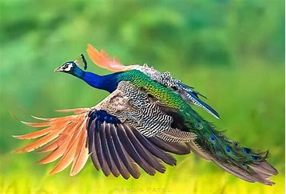

Peacocks are typically blue and green and the tail feathers of the male can be 60% of the bird’s total body length. The feathers have colorful ‘eye’ markings of gold, red and blue.The tail of the peacock is known as the ‘train’. Every year the Peacock molts and the feathers are released and grown again.The bright iridescent colors of the Peacocks’ feathers are not due to pigments but are actually due to structural changes that scatter light and produce amazing colors. According to a scientific study, peacocks will orient themselves towards the sun for the ‘train-rattling’ display to enhance the appearance of the feathers.There are several hundred variations in color and pattern recognized as separate morphs of the Indian Blue Peafowl among breeders. Pattern variations include solid wing color, pied which is where the color is not complete across the bird (such as in the photo above), and white-eyed where the ‘eye’ feathers are white instead of black. Color variations can include white, purple, opal, cameo, peach, bronze, charcoal, jade, taupe, and midnight. I have written more about the stunning White peacocks.Peacocks are LOUD and their call is called a scream for good reason as they can be heard from a mile away. This call is usually to attract peahens or if they hear another peacock calling so to announce they are here too.The term "peacock" is often used to refer to the males of the species within the genus Pavo. The two most recognized species are the Indian peafowl (Pavo cristatus) and the green peafowl (Pavo muticus). There's also the Congo peafowl (Afropavo congensis).Partridge, any of many small game birds native to the Old World and belonging to the family Phasianidae (order Galliformes). They are larger than quails, with stronger bills and feet. (For New World birds erroneously called partridges, see grouse; quail. For dwarf partridges of India called bush quail and for the Mexican bird called long-tailed partridge, see quail.The typical partridge of Europe is the gray partridge (Perdix perdix), called Hungarian (or hun) partridge in North America, where it was introduced in 1889 (Virginia) and again, much more successfully, in 1908–09 (Alberta). It ranges throughout the British Isles and across Europe to the Caspian region. The gray partridge has a reddish face and tail, gray breast, barred sides, and a dark U shape on the belly; sexes look alike. The hen lays about 15 eggs in a grassy cup in grainfields or hedges. A large male is 30 cm (12 inches) long and may weigh 0.33 kg (0.75 pound). Gray partridges prefer farmlands, where family groups (coveys) forage for seeds and insects.
| Year | Population |
|---|---|
| 2012 | 10,000 |
| 2014 | 25,000 |
| 2018 | 1,000 |
| 2020 | 1,500 |
| 2023 | 100 |